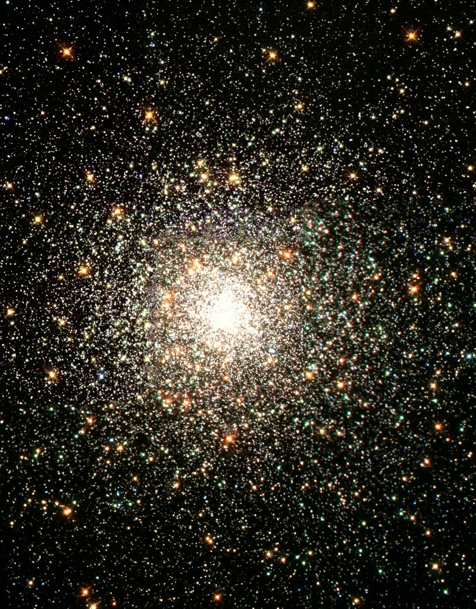

What We Do
Join us for our monthly Star Parties, held every third Saturday at Riverside Park's observatory deck. Use personal or club telescopes to explore planets, nebulae, and distant galaxies while enjoying complimentary hot cocoa and stargazing maps. We also offer hands-on workshops on topics like astrophotography, telescope maintenance, meteor shower viewing guides, and navigation.
In addition to our regular events, we host special gatherings throughout the year, including our annual Perseid Meteor Shower Camping Trip, solar eclipse viewings, and guest lectures. We're also passionate about community outreach, bringing interactive presentations and telescope demonstrations to local schools and libraries.